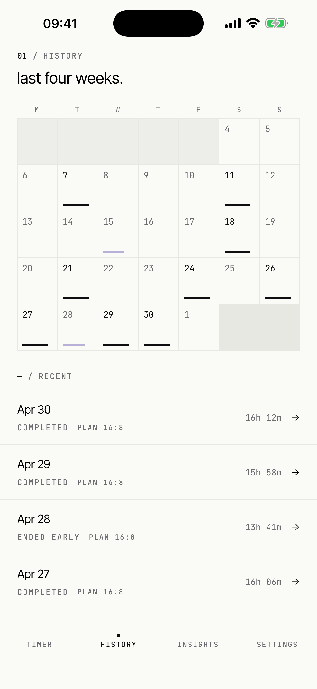
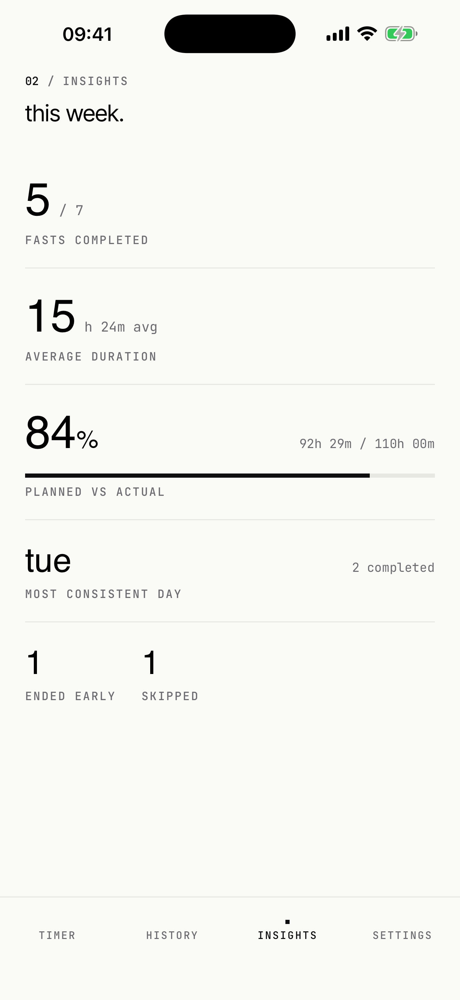
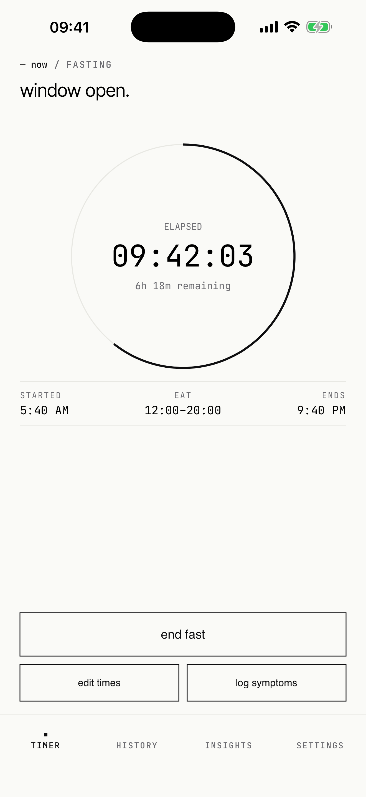

Simple fasting windows
Choose 12:12, 14:10, 16:8, or 18:6. The timer shows elapsed time, remaining time, eating window, and planned end time.
fast helps you run simple intermittent fasting windows, end early without guilt, and see the pattern afterward. It is made for general wellness, not streak pressure.



The app keeps the core flow small: pick a fasting window, start when ready, and log only the context that helps you notice patterns.
Choose 12:12, 14:10, 16:8, or 18:6. The timer shows elapsed time, remaining time, eating window, and planned end time.
Opt into start, completion, eating-window, and check-in reminders. Turn any reminder off later from settings.
See completed fasts, skipped days, and optional notes about hunger, energy, mood, and symptoms.
Live Activity and lock-screen widgets keep the active fast visible without opening the app.
If you enable it, fast can log completed fasts to Apple Health and read body weight for a local trend card.
fast does not require an account and does not send your fasting history to a server. Your data stays on your device unless you choose to share it through iOS or Apple Health.
End a fast if you feel weak, dizzy, or unwell. Consult a qualified healthcare professional before fasting if you have a medical condition, are pregnant, have a history of disordered eating, or are unsure whether fasting is appropriate for you.